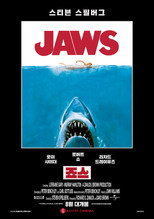

왓챠 영화799편 중 인기 60편
순서는 TMDB 인기도입니다 — 넷플릭스 외 서비스는 공식 순위를 공개하지 않습니다. 제공처는 JustWatch 자료(2026-09-22 확인)이며 가입 전 서비스에서 최종 확인하세요.
1사랑의 형태영화 · 2024 · 로맨스 · 92분제공처 ↗2 포풍추영영화 · 2025 · 액션 · 범죄 · 142분 · 티빙에도제공처 ↗3인셉션 Inception영화 · 2010 · 액션 · SF/판타지 · 148분 · 웨이브에도제공처 ↗4블레이드 러너 2049 Blade Runner 2049영화 · 2017 · SF/판타지 · 드라마 · 164분 · 웨이브에도제공처 ↗5매트릭스 The Matrix영화 · 1999 · 액션 · SF/판타지 · 136분넷플릭스 한국 최고 7위6반지의 제왕: 반지 원정대 The Lord of the Rings: The Fellowship of the Ring영화 · 2001 · 모험 · SF/판타지 · 227분 · 넷플릭스에도제공처 ↗7
포풍추영영화 · 2025 · 액션 · 범죄 · 142분 · 티빙에도제공처 ↗3인셉션 Inception영화 · 2010 · 액션 · SF/판타지 · 148분 · 웨이브에도제공처 ↗4블레이드 러너 2049 Blade Runner 2049영화 · 2017 · SF/판타지 · 드라마 · 164분 · 웨이브에도제공처 ↗5매트릭스 The Matrix영화 · 1999 · 액션 · SF/판타지 · 136분넷플릭스 한국 최고 7위6반지의 제왕: 반지 원정대 The Lord of the Rings: The Fellowship of the Ring영화 · 2001 · 모험 · SF/판타지 · 227분 · 넷플릭스에도제공처 ↗7 쉘터 Shelter영화 · 2026 · 액션 · 범죄 · 108분 · 넷플릭스, 티빙에도넷플릭스 한국 최고 1위8스파이더맨 Spider-Man영화 · 2002 · 액션 · SF/판타지 · 121분 · 웨이브에도제공처 ↗9
쉘터 Shelter영화 · 2026 · 액션 · 범죄 · 108분 · 넷플릭스, 티빙에도넷플릭스 한국 최고 1위8스파이더맨 Spider-Man영화 · 2002 · 액션 · SF/판타지 · 121분 · 웨이브에도제공처 ↗9 스파이더맨: 홈커밍 Spider-Man: Homecoming영화 · 2017 · 액션 · 모험 · 133분 · 넷플릭스, 웨이브에도제공처 ↗10포레스트 검프 Forrest Gump영화 · 1994 · 코미디 · 드라마 · 142분제공처 ↗11빽 투 더 퓨쳐 Back to the Future영화 · 1985 · 모험 · 코미디 · 120분제공처 ↗12글래디에이터 Gladiator영화 · 2000 · 액션 · 드라마 · 154분 · 웨이브에도제공처 ↗13퓨리 Fury영화 · 2014 · 전쟁 · 드라마 · 134분 · 웨이브에도제공처 ↗14더 이퀄라이저 The Equalizer영화 · 2014 · 스릴러 · 액션 · 132분 · 웨이브에도제공처 ↗15원스 어폰 어 타임 인… 할리우드 Once Upon a Time... in Hollywood영화 · 2019 · 코미디 · 드라마 · 162분제공처 ↗16
스파이더맨: 홈커밍 Spider-Man: Homecoming영화 · 2017 · 액션 · 모험 · 133분 · 넷플릭스, 웨이브에도제공처 ↗10포레스트 검프 Forrest Gump영화 · 1994 · 코미디 · 드라마 · 142분제공처 ↗11빽 투 더 퓨쳐 Back to the Future영화 · 1985 · 모험 · 코미디 · 120분제공처 ↗12글래디에이터 Gladiator영화 · 2000 · 액션 · 드라마 · 154분 · 웨이브에도제공처 ↗13퓨리 Fury영화 · 2014 · 전쟁 · 드라마 · 134분 · 웨이브에도제공처 ↗14더 이퀄라이저 The Equalizer영화 · 2014 · 스릴러 · 액션 · 132분 · 웨이브에도제공처 ↗15원스 어폰 어 타임 인… 할리우드 Once Upon a Time... in Hollywood영화 · 2019 · 코미디 · 드라마 · 162분제공처 ↗16 그래픽 디자이어 Graphic Desires영화 · 2023 · 스릴러 · 범죄 · 90분 · 웨이브, 티빙에도제공처 ↗17장고: 분노의 추적자 Django Unchained영화 · 2012 · 드라마 · 서부 · 165분제공처 ↗18
그래픽 디자이어 Graphic Desires영화 · 2023 · 스릴러 · 범죄 · 90분 · 웨이브, 티빙에도제공처 ↗17장고: 분노의 추적자 Django Unchained영화 · 2012 · 드라마 · 서부 · 165분제공처 ↗18 기생충 Parasite영화 · 2019 · 코미디 · 스릴러 · 131분 · 넷플릭스, 티빙에도넷플릭스 한국 최고 5위19헝거게임: 모킹제이 The Hunger Games: Mockingjay - Part 1영화 · 2014 · SF/판타지 · 모험 · 123분 · 웨이브에도제공처 ↗20존 윅 4 John Wick: Chapter 4영화 · 2023 · 액션 · 스릴러 · 170분 · 넷플릭스에도제공처 ↗21스파이더맨 3 Spider-Man 3영화 · 2007 · 액션 · 모험 · 139분 · 웨이브에도제공처 ↗22핵소 고지 Hacksaw Ridge영화 · 2016 · 드라마 · 역사 · 139분 · 웨이브에도제공처 ↗23
기생충 Parasite영화 · 2019 · 코미디 · 스릴러 · 131분 · 넷플릭스, 티빙에도넷플릭스 한국 최고 5위19헝거게임: 모킹제이 The Hunger Games: Mockingjay - Part 1영화 · 2014 · SF/판타지 · 모험 · 123분 · 웨이브에도제공처 ↗20존 윅 4 John Wick: Chapter 4영화 · 2023 · 액션 · 스릴러 · 170분 · 넷플릭스에도제공처 ↗21스파이더맨 3 Spider-Man 3영화 · 2007 · 액션 · 모험 · 139분 · 웨이브에도제공처 ↗22핵소 고지 Hacksaw Ridge영화 · 2016 · 드라마 · 역사 · 139분 · 웨이브에도제공처 ↗23 위플래쉬 Whiplash영화 · 2014 · 드라마 · 음악 · 106분 · 넷플릭스, 웨이브, 티빙에도제공처 ↗24라이언 일병 구하기 Saving Private Ryan영화 · 1998 · 전쟁 · 드라마 · 169분 · 웨이브에도제공처 ↗25대부 3 The Godfather Part III영화 · 1990 · 범죄 · 드라마 · 162분제공처 ↗26호빗: 뜻밖의 여정 The Hobbit: An Unexpected Journey영화 · 2012 · 모험 · SF/판타지 · 169분제공처 ↗27쉰들러 리스트 Schindler's List영화 · 1993 · 드라마 · 역사 · 195분 · 웨이브에도제공처 ↗28
위플래쉬 Whiplash영화 · 2014 · 드라마 · 음악 · 106분 · 넷플릭스, 웨이브, 티빙에도제공처 ↗24라이언 일병 구하기 Saving Private Ryan영화 · 1998 · 전쟁 · 드라마 · 169분 · 웨이브에도제공처 ↗25대부 3 The Godfather Part III영화 · 1990 · 범죄 · 드라마 · 162분제공처 ↗26호빗: 뜻밖의 여정 The Hobbit: An Unexpected Journey영화 · 2012 · 모험 · SF/판타지 · 169분제공처 ↗27쉰들러 리스트 Schindler's List영화 · 1993 · 드라마 · 역사 · 195분 · 웨이브에도제공처 ↗28 나이브스 아웃 Knives Out영화 · 2019 · 코미디 · 범죄 · 131분 · 티빙에도제공처 ↗29솔리타리 Solitary영화 · 2020 · SF/판타지 · 89분제공처 ↗30셔터 아일랜드 Shutter Island영화 · 2010 · 드라마 · 스릴러 · 138분제공처 ↗31컨저링 The Conjuring영화 · 2013 · 공포 · 스릴러 · 112분제공처 ↗32존 윅: 리로드 John Wick: Chapter 2영화 · 2017 · 액션 · 스릴러 · 122분 · 넷플릭스에도제공처 ↗33
나이브스 아웃 Knives Out영화 · 2019 · 코미디 · 범죄 · 131분 · 티빙에도제공처 ↗29솔리타리 Solitary영화 · 2020 · SF/판타지 · 89분제공처 ↗30셔터 아일랜드 Shutter Island영화 · 2010 · 드라마 · 스릴러 · 138분제공처 ↗31컨저링 The Conjuring영화 · 2013 · 공포 · 스릴러 · 112분제공처 ↗32존 윅: 리로드 John Wick: Chapter 2영화 · 2017 · 액션 · 스릴러 · 122분 · 넷플릭스에도제공처 ↗33 에브리씽 에브리웨어 올 앳 원스 Everything Everywhere All at Once영화 · 2022 · 액션 · 모험 · 140분 · 넷플릭스, 웨이브, 티빙에도제공처 ↗34
에브리씽 에브리웨어 올 앳 원스 Everything Everywhere All at Once영화 · 2022 · 액션 · 모험 · 140분 · 넷플릭스, 웨이브, 티빙에도제공처 ↗34 비키퍼 The Beekeeper영화 · 2024 · 액션 · 범죄 · 106분 · 넷플릭스, 웨이브에도넷플릭스 한국 최고 1위35
비키퍼 The Beekeeper영화 · 2024 · 액션 · 범죄 · 106분 · 넷플릭스, 웨이브에도넷플릭스 한국 최고 1위35 폴: 600미터 Fall영화 · 2022 · 스릴러 · 107분 · 넷플릭스, 웨이브, 티빙에도넷플릭스 한국 최고 9위36캐치 미 이프 유 캔 Catch Me If You Can영화 · 2002 · 드라마 · 범죄 · 141분제공처 ↗37
폴: 600미터 Fall영화 · 2022 · 스릴러 · 107분 · 넷플릭스, 웨이브, 티빙에도넷플릭스 한국 최고 9위36캐치 미 이프 유 캔 Catch Me If You Can영화 · 2002 · 드라마 · 범죄 · 141분제공처 ↗37 정글 Jungle영화 · 2017 · 모험 · 스릴러 · 115분 · 티빙에도제공처 ↗38디파티드 The Departed영화 · 2006 · 드라마 · 스릴러 · 151분 · 넷플릭스에도제공처 ↗39배트맨 비긴즈 Batman Begins영화 · 2005 · 드라마 · 범죄 · 140분 · 웨이브에도제공처 ↗40석양의 무법자 Il buono, il brutto, il cattivo영화 · 1966 · 서부 · 161분제공처 ↗41화이트 칙스 White Chicks영화 · 2004 · 코미디 · 범죄 · 109분제공처 ↗42겟 아웃 Get Out영화 · 2017 · 미스터리 · 스릴러 · 104분 · 웨이브에도제공처 ↗43배트맨 대 슈퍼맨: 저스티스의 시작 Batman v Superman: Dawn of Justice영화 · 2016 · 액션 · 모험 · 151분 · 넷플릭스에도제공처 ↗44컨택트 Arrival영화 · 2016 · 드라마 · SF/판타지 · 116분 · 웨이브에도제공처 ↗45
정글 Jungle영화 · 2017 · 모험 · 스릴러 · 115분 · 티빙에도제공처 ↗38디파티드 The Departed영화 · 2006 · 드라마 · 스릴러 · 151분 · 넷플릭스에도제공처 ↗39배트맨 비긴즈 Batman Begins영화 · 2005 · 드라마 · 범죄 · 140분 · 웨이브에도제공처 ↗40석양의 무법자 Il buono, il brutto, il cattivo영화 · 1966 · 서부 · 161분제공처 ↗41화이트 칙스 White Chicks영화 · 2004 · 코미디 · 범죄 · 109분제공처 ↗42겟 아웃 Get Out영화 · 2017 · 미스터리 · 스릴러 · 104분 · 웨이브에도제공처 ↗43배트맨 대 슈퍼맨: 저스티스의 시작 Batman v Superman: Dawn of Justice영화 · 2016 · 액션 · 모험 · 151분 · 넷플릭스에도제공처 ↗44컨택트 Arrival영화 · 2016 · 드라마 · SF/판타지 · 116분 · 웨이브에도제공처 ↗45 워킹맨 A Working Man영화 · 2025 · 액션 · 범죄 · 116분 · 티빙에도제공처 ↗46월드워 Z World War Z영화 · 2013 · 액션 · 공포 · 115분 · 넷플릭스에도제공처 ↗47트와일라잇 Twilight영화 · 2008 · SF/판타지 · 드라마 · 122분제공처 ↗48퀸카로 살아남는 법 Mean Girls영화 · 2004 · 드라마 · 코미디 · 97분제공처 ↗49프레스티지 The Prestige영화 · 2006 · 드라마 · 미스터리 · 130분제공처 ↗50다 큰 녀석들 Grown Ups영화 · 2010 · 코미디 · 102분제공처 ↗51맨 오브 스틸 Man of Steel영화 · 2013 · 액션 · 모험 · 143분 · 넷플릭스에도제공처 ↗52그린 북 Green Book영화 · 2018 · 드라마 · 코미디 · 130분제공처 ↗53오만과 편견 Pride & Prejudice영화 · 2005 · 드라마 · 로맨스 · 128분 · 웨이브에도제공처 ↗54
워킹맨 A Working Man영화 · 2025 · 액션 · 범죄 · 116분 · 티빙에도제공처 ↗46월드워 Z World War Z영화 · 2013 · 액션 · 공포 · 115분 · 넷플릭스에도제공처 ↗47트와일라잇 Twilight영화 · 2008 · SF/판타지 · 드라마 · 122분제공처 ↗48퀸카로 살아남는 법 Mean Girls영화 · 2004 · 드라마 · 코미디 · 97분제공처 ↗49프레스티지 The Prestige영화 · 2006 · 드라마 · 미스터리 · 130분제공처 ↗50다 큰 녀석들 Grown Ups영화 · 2010 · 코미디 · 102분제공처 ↗51맨 오브 스틸 Man of Steel영화 · 2013 · 액션 · 모험 · 143분 · 넷플릭스에도제공처 ↗52그린 북 Green Book영화 · 2018 · 드라마 · 코미디 · 130분제공처 ↗53오만과 편견 Pride & Prejudice영화 · 2005 · 드라마 · 로맨스 · 128분 · 웨이브에도제공처 ↗54 언터처블: 1%의 우정 Intouchables영화 · 2011 · 드라마 · 코미디 · 112분 · 넷플릭스, 웨이브, 티빙에도제공처 ↗55
언터처블: 1%의 우정 Intouchables영화 · 2011 · 드라마 · 코미디 · 112분 · 넷플릭스, 웨이브, 티빙에도제공처 ↗55
포풍추영영화 · 2025 · 액션 · 범죄 · 142분 · 티빙에도제공처 ↗3인셉션 Inception영화 · 2010 · 액션 · SF/판타지 · 148분 · 웨이브에도제공처 ↗4블레이드 러너 2049 Blade Runner 2049영화 · 2017 · SF/판타지 · 드라마 · 164분 · 웨이브에도제공처 ↗5매트릭스 The Matrix영화 · 1999 · 액션 · SF/판타지 · 136분넷플릭스 한국 최고 7위6반지의 제왕: 반지 원정대 The Lord of the Rings: The Fellowship of the Ring영화 · 2001 · 모험 · SF/판타지 · 227분 · 넷플릭스에도제공처 ↗7쉘터 Shelter영화 · 2026 · 액션 · 범죄 · 108분 · 넷플릭스, 티빙에도넷플릭스 한국 최고 1위8스파이더맨 Spider-Man영화 · 2002 · 액션 · SF/판타지 · 121분 · 웨이브에도제공처 ↗9스파이더맨: 홈커밍 Spider-Man: Homecoming영화 · 2017 · 액션 · 모험 · 133분 · 넷플릭스, 웨이브에도제공처 ↗10포레스트 검프 Forrest Gump영화 · 1994 · 코미디 · 드라마 · 142분제공처 ↗11빽 투 더 퓨쳐 Back to the Future영화 · 1985 · 모험 · 코미디 · 120분제공처 ↗12글래디에이터 Gladiator영화 · 2000 · 액션 · 드라마 · 154분 · 웨이브에도제공처 ↗13퓨리 Fury영화 · 2014 · 전쟁 · 드라마 · 134분 · 웨이브에도제공처 ↗14더 이퀄라이저 The Equalizer영화 · 2014 · 스릴러 · 액션 · 132분 · 웨이브에도제공처 ↗15원스 어폰 어 타임 인… 할리우드 Once Upon a Time... in Hollywood영화 · 2019 · 코미디 · 드라마 · 162분제공처 ↗16그래픽 디자이어 Graphic Desires영화 · 2023 · 스릴러 · 범죄 · 90분 · 웨이브, 티빙에도제공처 ↗17장고: 분노의 추적자 Django Unchained영화 · 2012 · 드라마 · 서부 · 165분제공처 ↗18기생충 Parasite영화 · 2019 · 코미디 · 스릴러 · 131분 · 넷플릭스, 티빙에도넷플릭스 한국 최고 5위19헝거게임: 모킹제이 The Hunger Games: Mockingjay - Part 1영화 · 2014 · SF/판타지 · 모험 · 123분 · 웨이브에도제공처 ↗20존 윅 4 John Wick: Chapter 4영화 · 2023 · 액션 · 스릴러 · 170분 · 넷플릭스에도제공처 ↗21스파이더맨 3 Spider-Man 3영화 · 2007 · 액션 · 모험 · 139분 · 웨이브에도제공처 ↗22핵소 고지 Hacksaw Ridge영화 · 2016 · 드라마 · 역사 · 139분 · 웨이브에도제공처 ↗23위플래쉬 Whiplash영화 · 2014 · 드라마 · 음악 · 106분 · 넷플릭스, 웨이브, 티빙에도제공처 ↗24라이언 일병 구하기 Saving Private Ryan영화 · 1998 · 전쟁 · 드라마 · 169분 · 웨이브에도제공처 ↗25대부 3 The Godfather Part III영화 · 1990 · 범죄 · 드라마 · 162분제공처 ↗26호빗: 뜻밖의 여정 The Hobbit: An Unexpected Journey영화 · 2012 · 모험 · SF/판타지 · 169분제공처 ↗27쉰들러 리스트 Schindler's List영화 · 1993 · 드라마 · 역사 · 195분 · 웨이브에도제공처 ↗28나이브스 아웃 Knives Out영화 · 2019 · 코미디 · 범죄 · 131분 · 티빙에도제공처 ↗29솔리타리 Solitary영화 · 2020 · SF/판타지 · 89분제공처 ↗30셔터 아일랜드 Shutter Island영화 · 2010 · 드라마 · 스릴러 · 138분제공처 ↗31컨저링 The Conjuring영화 · 2013 · 공포 · 스릴러 · 112분제공처 ↗32존 윅: 리로드 John Wick: Chapter 2영화 · 2017 · 액션 · 스릴러 · 122분 · 넷플릭스에도제공처 ↗33에브리씽 에브리웨어 올 앳 원스 Everything Everywhere All at Once영화 · 2022 · 액션 · 모험 · 140분 · 넷플릭스, 웨이브, 티빙에도제공처 ↗34비키퍼 The Beekeeper영화 · 2024 · 액션 · 범죄 · 106분 · 넷플릭스, 웨이브에도넷플릭스 한국 최고 1위35폴: 600미터 Fall영화 · 2022 · 스릴러 · 107분 · 넷플릭스, 웨이브, 티빙에도넷플릭스 한국 최고 9위36캐치 미 이프 유 캔 Catch Me If You Can영화 · 2002 · 드라마 · 범죄 · 141분제공처 ↗37정글 Jungle영화 · 2017 · 모험 · 스릴러 · 115분 · 티빙에도제공처 ↗38디파티드 The Departed영화 · 2006 · 드라마 · 스릴러 · 151분 · 넷플릭스에도제공처 ↗39배트맨 비긴즈 Batman Begins영화 · 2005 · 드라마 · 범죄 · 140분 · 웨이브에도제공처 ↗40석양의 무법자 Il buono, il brutto, il cattivo영화 · 1966 · 서부 · 161분제공처 ↗41화이트 칙스 White Chicks영화 · 2004 · 코미디 · 범죄 · 109분제공처 ↗42겟 아웃 Get Out영화 · 2017 · 미스터리 · 스릴러 · 104분 · 웨이브에도제공처 ↗43배트맨 대 슈퍼맨: 저스티스의 시작 Batman v Superman: Dawn of Justice영화 · 2016 · 액션 · 모험 · 151분 · 넷플릭스에도제공처 ↗44컨택트 Arrival영화 · 2016 · 드라마 · SF/판타지 · 116분 · 웨이브에도제공처 ↗45워킹맨 A Working Man영화 · 2025 · 액션 · 범죄 · 116분 · 티빙에도제공처 ↗46월드워 Z World War Z영화 · 2013 · 액션 · 공포 · 115분 · 넷플릭스에도제공처 ↗47트와일라잇 Twilight영화 · 2008 · SF/판타지 · 드라마 · 122분제공처 ↗48퀸카로 살아남는 법 Mean Girls영화 · 2004 · 드라마 · 코미디 · 97분제공처 ↗49프레스티지 The Prestige영화 · 2006 · 드라마 · 미스터리 · 130분제공처 ↗50다 큰 녀석들 Grown Ups영화 · 2010 · 코미디 · 102분제공처 ↗51맨 오브 스틸 Man of Steel영화 · 2013 · 액션 · 모험 · 143분 · 넷플릭스에도제공처 ↗52그린 북 Green Book영화 · 2018 · 드라마 · 코미디 · 130분제공처 ↗53오만과 편견 Pride & Prejudice영화 · 2005 · 드라마 · 로맨스 · 128분 · 웨이브에도제공처 ↗54언터처블: 1%의 우정 Intouchables영화 · 2011 · 드라마 · 코미디 · 112분 · 넷플릭스, 웨이브, 티빙에도제공처 ↗55
죠스 Jaws영화 · 1975 · 공포 · 스릴러 · 124분제공처 ↗56라라랜드 La La Land영화 · 2016 · 코미디 · 드라마 · 127분 · 웨이브에도제공처 ↗57레버넌트: 죽음에서 돌아온 자 The Revenant영화 · 2015 · 서부 · 드라마 · 156분 · 넷플릭스, 디즈니+, 웨이브에도제공처 ↗58퍼시픽 림 Pacific Rim영화 · 2013 · 액션 · SF/판타지 · 131분제공처 ↗59블랙 호크 다운 Black Hawk Down영화 · 2001 · 액션 · 전쟁 · 145분 · 웨이브에도제공처 ↗60존 윅 3: 파라벨룸 John Wick: Chapter 3 - Parabellum영화 · 2019 · 액션 · 스릴러 · 131분 · 넷플릭스에도제공처 ↗